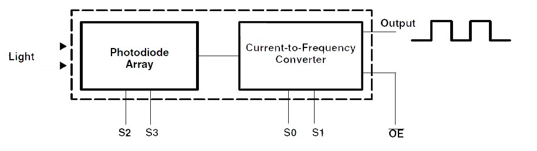

Arduino to platforma dla systemów wbudowanych, oparta w większości o 8-bitowe mikrokontrolery z rodziny AVR; jest to płytka drukowana z mikrokontrolerem i jego wyprowadzeniami zdolna obsługiwać urządzenia zewnętrzne np. czujniki, sterowniki silników, wyświetlacze itp.
Na płytce Arduino Uno znajdziemy 6 wejść analogowych, pozwalających obsługiwać wszelkiego rodzaju czujniki.
Opisy przykładowych czujników zaczerpnięte zostały ze strony firmy BOTLAND.
W Arduino dostępnych jest kilka linii analogowych, z wykorzystaniem których można mierzyć analogowe sygnały, na przykład z czujników, w przedziale napięcia od \(0 V\) do \(5 V\) i z rozdzielczością 10 bitów, co oznacza, że mierzone napięcie będzie odczytywane wartościami od 0 do 1023. Dla \(5 V\) daje to rozdzielczość \(\frac{5 V}{1023} = 0.0049 V = 4.9 mV\). Zakres rozdzielczości przetwornika można zmienić za pomocą funkcji analogReference(). Pomiar wartości analogowej trwa około \(100 µs\). Konfiguruje się je, identycznie jak linie cyfrowe, za pomocą funkcji pinMode(), digitalWrite() i digitalRead(), z tym że parametr <pin> jest oznaczany za pomocą aliasów od A0 do A5. Analogowe linie również posiadają cyfrowo załączane rezystory podwyższające, które można włączyć z wykorzystaniem funkcji digitalWrite(). Aby działało wejście analogowe mikrokontrolera musi ono być wcześniej ustawione jako wejście z wykorzystaniem funkcji pinMode(). Należy również wyłączyć rezystor podwyższający. Do odczytu napięcia z linii analogowej mikrokontrolera służy funkcja analogRead(<pin>). Parametrem <pin> jest linia analogowa. Na przykład komenda
val = analogRead(A2); //odczyt wartości sygnału z linii A2
powoduje odczyt wartości analogowej z linii A2 i przypisanie jej do zmiennej val. Dostępna jest również funkcja analogReference(<type>), za pomocą której można zmienić parametry pracy przetwornika analogowo-cyfrowego mikrokontrolera. Parametr <type> określa napięcie odniesienia dla przetwornika. Dostępne są następujące opcje:
Możliwość zmiany napięcia odniesienia dla przetwornika A/C mikrokontrolera daje możliwość dostosowania się do wartości mierzonego sygnału analogowego z wymaganą rozdzielczością pomiaru.
Fototranzystor TEFT4300:
Specyfikacja:
Fototranzystor w obudowie \(3 mm\). Soczewka zaciemniona.
Poniższy rysunek przedstawia wykres czułości czujnika w funkcji długości fali:
Szczegóły w dokumentacji.
Fotorezystor 20 - 30 kΩ GL5537-1:
Specyfikacja:
Szczegóły w dokumentacji.
Czujnik wilgotności gleby:
Opis:
Czujnik, służący do wyznaczania poziomu wilgotności gleby. Zasilany jest napięciem od \(3.3 V\) do \(5 V\). Posiada wyjście cyfrowe oraz analogowe, co czyni go kompatybilnym z większością modułów uruchomieniowych, w tym Raspberry Pi i Arduino. Urządzenie może być stosowane np. do pomiaru wilgotności gleby w doniczce.
Obsługa czujnika:
Urządzenie składa się z trzech części: sondy pomiarowej, modułu detektora oraz przewodów. Sondy należy połączyć z modułem głównym przy pomocy przewodów i umieścić w glebie, której wilgotność będzie mierzona.
Czujnik posiada wyjście cyfrowe D0 sygnalizujące przekroczenie ustawionej za pomocą potencjometru wartości oraz analogowe A0, przy pomocy którego uzyskuje się dokładną wartość wilgotności.
Wyjście cyfrowe D0:
Za pomocą potencjometru ustawiany jest próg, po którego przekroczeniu wyjście D0 przechodzi ze stanu wysokiego w stan niski. Wyprowadzenie D0 można połączyć bezpośrednio z mikrokontrolerem bądź zestawem uruchomieniowym, w tym Arduino lub np. z modułem buzzera, który będzie sygnalizował zbyt niski bądź wysoki poziom wilgotności.
Wyjście analogowe A0:
Czujnik posiada także wyjście analogowe A0, które należy podłączyć do wyprowadzenia przetwornika A/C (wejścia analogowego w Arduino). Pozwoli to, mierząc proporcjonalny sygnał napięciowy, dokładniej określić poziom wilgotności.
Zawartość zestawu:
Czujnik prądu ACS711KLCTR ± 25 A - SMD:
Specyfikacja:
Opis:
Czujnik prądu, działający w zakresie \(± 25 A\) na podstawie efektu Halla (wiki). Wyjściem jest napięcie analogowe.
Pin FAULT, normalnie znajdujący sie w stanie wysokim, osiąga stan niski, gdy wartość mierzonego prądu przekroczy dopuszczalny zakres \(± 25 A\).
Szczegóły w dokumentacji
Czujnik ruchu PIR HC-SR501:
Specyfikacja:
Napięcie zasilania DC: \(4.5 V - 20 V\)
Pobór prądu w stanie czuwania: \(50 µA\)
Zakres pomiarowy: maks. \(7 m\)
Kąt widzenia: do \(100 °\)
Wyjście cyfrowe:
- Stan wysoki - obiekt wykryty
- Stan niski - brak obiektu
Wymiary modułu: 32.5 mm x 24.5 mm
Opis:
Czujnik typu PIR (wiki) pozwala na wykrywanie ruchu. Wykorzystywany jest do wykrywania obecności człowieka w pomieszczeniach w systemach alarmowych i oświetleniowych. Sensor zasilany jest napięciem z zakresu od \(4.5 V\) do \(20 V\), posiada zasięg do \(7 m\). Wykrycie obiektu sygnalizowane jest stanem wysokim.
Cyfrowe wyjście umożliwia połączenie czujnika z dowolnym zestawem uruchomieniowym np. Arduino, STM32Discovery lub minikomputerem Raspberry Pi.
Wyprowadzeniami są złącza goldpin (raster \(2.45 mm\)) umożliwiające podłączenie sensora za pomocą przewodów.
Sposób użycia:
Zasilanie (od \(4.5 V\) do \(20 V\)) należy podłączyć do zewnętrznych wyprowadzeń oznaczonych odpowiednio symbolem VIN i GND. Wykrycie obiektu w polu widzenia czujnika sygnalizowane jest stanem wysokim, pojawiającym się na wyprowadzeniu OUT.
Dzięki potencjometrom użytkownik może regulować:
Za pomocą zworki wybierany jest tryb pracy z pośród dwóch dostępnych:
Czujnik transoptor odbiciowy CNY70:
Transoptor (wiki) odbiciowy, stosowany np. do odróżniania krawędzi lub wykrywania linii. Wymiary obudowy to 7 x 7 x 6 mm, montaż przewlekany.
Specyfikacja:
Opis:
Czujnik wysyła wiązkę promieniowania poprzez nadajnik podczerwieni, a następnie za pomocą fototranzystora mierzy natężenie światła odbitego. Wyjściem jest sygnał napięciowy, zależny od natężenia światła padającego na ten detektor. Im więcej światła się odbije i dotrze do fotodetektora, tym napięcie na wyjściu będzie miało wyższą wartość. Jako że promieniowanie świetlne lepiej odbija powierzchnia jasna (a ciemna pochłania), dlatego napięcie będzie wyższe na białym materiale.
Zastosowanie:
Czujniki są chętnie wykorzystywane przez konstruktorów robotów Line Follower (wiki) do detekcji linii oraz w konstrukcjach minisumo, gdzie służą do wykrywania krawędzi ringu. Jako że w tych przypadkach wykrywane są wartości skrajne (odróżnianie czarnego od białego - wartości pośrednie nie są istotne), czujnik może znajdować się wyżej nad powierzchnią niż wskazuje dokumentacja.
W przemyśle układy można wykorzystać np. do detekcji krawędzi lub wykrywaniu obiektów z bliskiej odległości.
Czujnik posiada łatwą w montażu obudowę przewlekaną. Dodatkowo zamontowano otoczkę ochroną, która nie pozwala na całkowite dociśnięcie detektora i nadajnika do podłoża.
Przykład podłączenia:
Czujnik składa się z dwóch głównych części: detektora w postaci fototranzystora oraz nadajnika, którym jest dioda podczerwona. Aby nadajnik nie uległ zniszczeniu należy ograniczyć jego prąd (maks. \(50 mA\)), a co za tym idzie moc promieniowania podczerwonego. Wykonuje się to stosując rezystor włączony szeregowo (R3). Dla poprawnego działania fototranzystora niezbędny jest rezystor podwyższający. Odpowiednie wartości należy dobrać posługując się dokumentacją.
Szczegóły w dokumentacji
Czujnik ugięcia 55 mm x 6.3 mm - SparkFun:
Specyfikacja:
Opis:
Podczas zaginania, czujnik zwieksza swoją rezystancję. Wyprowadzenia mają popularny raster \(2,54 mm\) (\(0.1"\)), dzięki czemu czujnik można wpiąć w płytkę stykową bądź połączyć przy pomocy przewodów.
Zastosowanie:
Może zostać użyty do wykrywania ruchów dłoni np. zaciskania pięści. Czujniki tego typu są wykorzystywane w interaktywnych rękawicach, służących do sterowania robotami, np. w Nintendo Power Glove (wiki).
Uwaga:
Nie należy zginać czujnika w części, gdzie nie występują metalowe blaszki. Użyteczna część czujnika może być zaginana w dopuszczalnym zakresie.
Szczegóły w dokumentacji
Czujnik siły nacisku okrągły 5mm (0.2”):
Specyfikacja:
Opis:
Czujnik siły zmniejsza swoją rezystancje, gdy siła przyłożona do okrągłej końcówki narasta. Dzięki temu zjawisku oraz wykorzystaniu mikrokontrolera z przetwornikiem analogowo-cyfrowym, można skonstruować czujnik mierzący siłę nacisku. Pomiar może być wyświetlany np. na wyświetlaczu LCD.
Przy braku działania siły na sensor, rezystancja wynosi około \(1 MΩ\). Podczas przykładania palca z różną siłą miernik wskazywał od \(100 kΩ\) do kilkuset \(Ω\).
Szczegóły w dokumentacji
Czujnik koloru TCS3200D:
Czujnik, przetwarzający natężenie światła wybranego koloru na mierzalną częstotliwość (np. poprzez zastosowanie mikrokontrolera).
Specyfikacja:
Szczegóły w dokumentacji
Czujnik tlenku węgla MQ-7:
Czujnik tlenku węgla z wyjściem analogowym.
Specyfikacja:
Opis:
Czujnik wykrywa stężenie CO w powietrzu. Wynik można uzyskać z pomiaru napięcia na wyjściu analogowym. Dzięki temu urządzeniu można stworzyć system ostrzegania przed bardzo niebezpiecznym gazem, jakim jest tlenek węgla. Do obsługi sensora można wykorzystać np. moduł Arduino bądź płytkę z rodziny STM32 Discovery.
Szczegóły w dokumentacji
Cyfrowy barometr MPL115A2 - 115 kPa:
Cyfrowy czujnik ciśnienia firmy Freescale. Obudowa LGA.
Specyfikacja:
Przykłady zastosowania:
Szczegóły w dokumentacji
Magnetometr – przyrząd do pomiaru wielkości, kierunku oraz zmian pola magnetycznego.
Magnetometr 3-osiowy, cyfrowy MAG3110:
3-osiowy magnetometr w małej obudowie DFN. Zakres pomiarowy: \(± 1000 µT\). Czułość na poziomie \(0,1 µT\). Interfejs komunikacyjny to magistrala I2C.
Specyfikacja:
Do poprawanego działania układu niezbędne są kondensatory filtrujące oraz rezystory podwyższające linie magistrali I2C.
Szczegóły w dokumentacji
Przyspieszeniomierz, akcelerometr, akceleromierz, przetwornik przyspieszenia – przyrząd do pomiaru przyspieszeń liniowych lub kątowych. Przyspieszeniomierz, w przeciwieństwie do urządzeń bazujących na teledetekcji, mierzy własny ruch.
Akcelerometr 3-osiowy, cyfrowy LIS35DE:
Specyfikacja:
Zastosowanie:
Układy tego typu wykorzystywane są między innymi w kontrolerach gier, interaktywnych interfejsach czy smartfonach.
Szczegóły w dokumentacji
Termometr analogowy
Termometr analogowy jest termistorem, czyli rezystorem reagującym na zmianę temperatury istotną zmianą rezystancji (wszystkie przewodniki zmieniają rezystancję wraz z temperaturą, jednak w porównaniu do termistora, zmiana ta jest nieznaczna).
Pasywny, trójnóżkowy termometr może być układem proporcjonalnym lub mostkiem z termistorem w jednej gałęzi. Termometry aktywne są bardziej skomplikowane i gwarantują znacznie większą liniowość i jej niezależność od napięcia zasilającego, a sygnałem wyjściowym jest nie zmiana rezystancji, a proporcjonalna do temperatury wartość napięcia.
Przykładem może być aktywny analogowy termometr firmy Microchip MCP9700. Termometr ten posiada następujące cechy:
Schemat połączeń
Termometr MCP9700 dostarczany jest w 3 różnych obudowach. Do projektowania najwygodniej skorzystać z układu z nóżkami w obudowie TO-92.
Uwaga:
Układ wyprowadzeń w innych termometrach może być różny od poniższego. Np. termometr cyfrowy Dalllas ma masę i zasilanie odwrotnie. Źle podłączony układ bardzo szybko i mocno się nagrzewa!
Wartość napięcia z wyjścia termometru można odczytać za pomocą wejścia analogowego Arduino.
Kod programu
const int input = A0;
float temp;
void setup()
{
Serial.begin(9600);
}
void loop () {
temp = analogRead(input)*5/1024.0;
temp = temp - 0.5;
temp = temp / 0.01;
Serial.println(temp);
delay(500);
}
Układ DS18B20 jest cyfrowym czujnikiem temperatury produkowanym przez firmę Dallas Semiconductor. Umożliwiają pomiar temperatury w zakresie od \(-55\) do \(+125 °C\) z dokładnością do trzech miejsc po przecinku (12 bit). Termometr wyposażony jest przez producenta w interfejs OneWire, który charakteryzuje się prostą obsługą, małymi wymaganiami dotyczącymi linii transmisyjnej i możliwością równoległego łączenia urządzeń.
Specyfikacja:
Z Arduino termometr DS18B20 obsłużyć można za pomocą dostarczanej standardowo biblioteki OneWire. Biblioteka ta dostarcza jednak tylko obsługę interfejsu, a nie konkretnych czujników. Można je oprogramować samodzielnie, lecz wygodniej skorzystać z biblioteki DallasTemperature, którą można pobrać ze strony autora. Archiwum należy rozpakować do katalogu programu w podkatalogu libraries (np. C:/Program Files/Arduino-1.0.2/libraries/). Biblioteka musi znajdować się we własnym katalogu o nazwie bez spacji, podkreśleń czy myślników.
Termometr podłączamy zgodnie ze schematem. Trzymając płaską powierzchnią do siebie i nóżkami w dół, lewa nóżka to masa, a prawa zasilanie. Środkowa nóżka jest sygnałowa, ale musi zostać podciągnieta do zasilania przez rezystor \(4.7 kΩ\) (lub podobnie, równie dobrze mogą to być 2 równolegle połączone \(10 kΩ\)).
#include <OneWire.h>
#include <DallasTemperature.h>
// Data wire is plugged into pin 7 on the Arduino
#define ONE_WIRE_BUS 7
// Setup a OneWire instance to communicate with ANY OneWire devices
OneWire oneWire(ONE_WIRE_BUS);
// Set OneWire reference to Dallas Temperature sensor.
DallasTemperature sensors(&oneWire);
void setup(void)
{
Serial.begin(9600);
sensors.begin();
}
void loop(void)
{
sensors.requestTemperatures();
Serial.println("");
delay(500);
Serial.print("Sensor 1: ");
Serial.println(sensors.getTempCByIndex(0)); \\ first founded sensor have Index 0
}
Odczyt wartości z kilku czujników można zrealizować na kilka sposobów. Jeden z nich polega na odczycie wg indeksów nadawanych przy inicjalizacji magistrali, wykorzystując funkcję getTempCByIndex(<m>), gdzie <m> jest kolejnym numerem czujnika w zakresie od \(0\) do \((n-1)\).
// piece of code
Serial.println("Sensor 1: ");
Serial.println(sensors.getTempCByIndex(0));
delay(500);
Serial.println("Sensor 2: ");
Serial.println(sensors.getTempCByIndex(1));
Drugą metodą, bardziej sensowną z punktu eksploatacji projektowanych urządzeń, jest wykorzystanie unikatowego adresu każdego z urządzeń magistrali OneWire, zapamiętanie ich w tablicy i odczytywanie wartości z kolejnych czujników poprzez wskazanie ich po adresie. Adresy urządzeń można uzyskać, korzystając z polecenia ds.search(addr). Typ urządzenia można rozpoznać po najbardziej znaczących bajtach adresu (podobnież, sześć pierwszych bajtów adresu MAC kart sieciowych jest przypisanych do producenta) – dla czujnika Dallas DS18B20 jest to 0 × 28.
#include <OneWire.h>
// DS18S20 Temperature chip i/o
OneWire ds(7); // on pin 7
void setup(void)
{
// initialize inputs/outputs
// start serial port
Serial.begin(9600);
}
void loop(void)
{
byte i;
byte present = 0;
byte data[12];
byte addr[8];
if ( !ds.search(addr))
{
Serial.print("No more addresses.\n");
ds.reset_search();
return;
}
Serial.print("R=");
for( i = 0; i < 8; i++)
{
Serial.print(addr[i], HEX);
Serial.print(" ");
}
if ( OneWire::crc8( addr, 7) != addr[7])
{
Serial.print("CRC is not valid!\n");
return;
}
if ( addr[0] == 0x10)
{
Serial.print("Device is a DS18S20 family device.\n");
}
else if ( addr[0] == 0x28)
{
Serial.print("Device is a DS18B20 family device.\n");
}
else
{
Serial.print("Device family is not recognized: 0x");
Serial.println(addr[0],HEX);
return;
}
ds.reset();
ds.select(addr);
ds.write(0x44,1); // start conversion, with parasite power on at the end
delay(1000); // maybe 750ms is enough, maybe not
// we might do a ds.depower() here, but the reset will take care of it.
present = ds.reset();
ds.select(addr);
ds.write(0xBE); // Read Scratchpad
Serial.print("P=");
Serial.print(present,HEX);
Serial.print(" ");
for ( i = 0; i < 9; i++)
{
// we need 9 bytes
data[i] = ds.read();
Serial.print(data[i], HEX);
Serial.print(" ");
}
Serial.print(" CRC=");
Serial.print( OneWire::crc8( data, 8), HEX);
Serial.println();
}
MCP9700-E/TO to czujnik analogowy, nie potrzebujący żadnych dodatkowych elementów do działania.
Podłączenie nóżek:
Czułość: \(10 \frac{mV}{ºC}\)
Szczegóły w dokumentacji.
const int input = A0;
const int led = 10;
void setup()
{
pinMode(input, INPUT);
pinMode(led, OUTPUT);
Serial.begin(9600);
}
int x, y;
float temp;
void loop()
{
x = analogRead(input);
temp = x*5/1.023; //otrzymujemy wartość w mV (gdybyśmy napisali 1023.0, zamiast 1.023, wynik otrzymalibyśmy w V)
temp = temp - 500; //skalujemy do 0 °C – różnica między napięciem odczytanym z czujnika a 500 mV jest liniowo zależna od temperatury
temp = temp/10; //tę różnicę dzielimy przez 10, aby otrzymać stopnie Celcjusza
}
Do powyższego programu dołączymy teraz diodę, reagującą na zmianę temperatury oraz możliwość odczytu monitora portu szeregowego.
const int input = A0;
const int led = 10;
void setup()
{
pinMode(input, INPUT);
pinMode(led, OUTPUT);
Serial.begin(9600);
Serial.println("!");
}
int x, y;
float temp;
void loop()
{
x = analogRead(input);
temp = x/2.046-50; //odczyt w mV
x = floor(temp*10);
y = map(x,250,350,0,255); //dopasowujemy przedział tak, żeby dioda reagowała odpowiednio intensywnie
y = constrain(y,0,255);
analogWrite(led,y);
if (Serial.available() > 0)
{
if (Serial.read() == '!')
{
Serial.println(temp);
}
}
}
Treść pliku o rozszerzeniu .py, umożliwiająca nam podgląd wykresu temperatury:
import pylab, numpy, serial, time
port = serial.Serial('/dev/ttyACM0',9600)
time.sleep(1)
port.readline()
dane = []
for x in xrange(100):
port.write("!")
dane.append(float(port.readline()))
X = numpy.arange(100)
Y = numpy.array(dane)
pylab.ion()
wykres = pylab.plot(X, Y)[0]
pylab.ylim([20, 37])
while True:
port.write("!")
dane.append(float(port.readline()))
dane = dane[1:]
wykres.set_ydata(numpy.array(dane))
pylab.draw()
pylab.pause(0.1)
Treść pliku o rozszerzeniu .py, umożliwiająca nam podgląd wykresu uśrednionej temperatury:
import pylab, numpy, serial, time
step = 40
port = serial.Serial('/dev/ttyACM0',9600)
time.sleep(1)
port.readline()
def ma(Y):
return [sum(Y[x:x+step])/float(step) for x in range(len(Y)-step+1)]
dane = []
for x in xrange(100):
port.write("!")
dane.append(float(port.readline()))
X = numpy.arange(100-step+1)
Y = numpy.array(ma(dane))
pylab.ion()
wykres = pylab.plot(X, Y)[0]
pylab.ylim([20, 37])
while True:
port.write("!")
dane.append(float(port.readline()))
dane = dane[1:]
wykres.set_ydata(numpy.array(ma(dane)))
pylab.draw()
pylab.pause(0.1)
MCP9700-E/TO to czujnik analogowy, nie potrzebujący żadnych dodatkowych elementów do działania.
Podłączenie nóżek:
Czułość: \(10 \frac{mV}{ºC}\)
Szczegóły w dokumentacji.
Wykorzystany w przykładzie zestaw LCD dla Arduino to moduł LCD alfanumeryczny, 2×16 z przylutowaną złączką pasującą do płytki prototypowej, oraz potencjometr \(10 kΩ\), liniowy do regulacji kontrastu. Moduł LCD posiada kontroler zgodny z HD44780, co oznacza, że biblioteka LiquidCrystal będzie go obsługiwała.
#include <LiquidCrystal.h>
float temp;
LiquidCrystal lcd (12,11,10,9,8,7);
void setup()
{
analogReference(EXTERNAL);
}
void loop ()
{
temp = analogRead(0)*3.3/1024.0;
temp = temp - 0.5;
temp = temp / 0.01;
delay(500);
lcd.print("Temp: ");
lcd.print(temp);
lcd.print(" ");
lcd.setCursor(0,0);
}
LiquidCrystal lcd (12,11,10,9,8,7); definiuje zmienną lcd, przez którą będziemy się komunikować z modułem. Tutaj podano, do których pinów Arduino podłączamy kolejno:
Poza tym do modułu musimy podłączyć zasilanie oraz sygnał R/W modułu LCD do masy. Następnie regulujemy kontrast. Odbywa się to przez podanie napięcia między \(0 V\) a \(5 V\) na pin \(V-{0}\) modułu. Aby móc je regulować skorzystamy z potencjometru będącego w zestawie. Następnie w pętli loop odczytujemy temperaturę z czujnika. Mając temperaturę wyświetlamy napis Temp:, potem wartość odczytu i wracamy na początek linii.
Więcej na http://starter-kit.nettigo.pl/2010/03/temperatura-i-lcd/.
Problem podczas pomiaru temperatury wody oceanicznej związany jest z pływami – podczas przypływu poziom wody podnosi się, utrudniając komunikację. Pomiar temperatury słonej wody, i to w dodatku na zewnątrz, niesie ze sobą pewne komplikacje. Słona woda i elektronika nie są najlepszym połączeniem. Musimy się więc upewnić, że utrzymujemy sprzęt w suchych i bezpiecznych warunkach, a jednocześnie jest on w stanie dokonać dokładnego pomiaru. Rozwiązaniem problemu może być umieszczenie sprzętu w solidnym, plastikowym pojemniku na żywność, ponieważ są one zwykle bardzo szczelne. Konieczne jest jednak wykonanie otworów na czujniki i właściwe ich uszczelnienie wokół przewodów.
Materiały:
W naszym przypadku wyboru czujników temperatury, zastosowaliśmy wodoodporną wersję do pomiaru temperatury wody oraz koszulkę termokurczliwą (wiki) do ochrony zwykłego czujnika, służącego nam do pomiaru temperatury powietrza.
Shieldy Arduino to płytki, umożliwiające wykorzystanie dodatkowych funkcji w Arduino. Do tego projektu użyto schieldu GSM, aby umożliwić wysyłanie danych do naszego przyszłego serwisu.
Shield GSM wymaga aktywowanej karty SIM, aby móc połączyć się z siecią komórkową.
Jednym z prostszych sposobów na podłączenie pozostałych elementów do Arduino, jest zrobienie z płytki prototypowej czegoś w rodzaju shieldu i przylutowanie jej z pomocą złącza szpilkowego, a następnie przylutowanie pozostałych elementów do płytki.
Zauważmy, że końcówki kabli wchodzące do pinów nie są widoczne; zamiast tego używane elementy zostają połączone z odpowiednim pinem za pomocą linii. Dodatkowo, ponieważ patrzymy na płytkę od spodu, rozmieszczenie elementów na płytce jest widokiem z lustra.
Utworzenie zaplecza
Xively (dawniej Pachube, Cosm) to platforma chmury obliczeniowej służąca do podłączania urządzeń do Internetu Przedmiotów (wiki). Oferuje ona łatwy sposób wysyłania danych do serwisu i tworzenia aplikacji w oparciu o usługi i dane. Istnieje również kilka innych tego rodzaju platform, ale Xively wydaje się najłatwiejsza w użyciu, zapewniając jednocześnie odpowiednio dużo dokumentacji.
Kiedy już się zalogujemy, utworzenie nowego odbiornika jest bardzo proste. Na karcie developer workbench znajduje się przycisk + Add Device. Podczas dodawania urządzenia możemy wybrać jego nazwę, opis oraz ustawienia prywatności. To doprowadzi nas do ekranu podstawowego przeglądu dla tego urządzenia. Aby móc gromadzić dane, musimy rozpocząć działanie co najmniej jednego kanału. Podobnie jak w przypadku urządzeń, korzystamy z przycisku +Add Channel. Gdy to nastąpi, należy zapamiętać swój kanał oraz nazwę urządzenia, a następnie skopiować adres API i numer kanału. W celu ograniczenia uprawnień można nawet wygenerować nowy klucz API (za pomocą +Add Key) z innymi uprawnieniami niż domyślny klucz, generowany automatycznie.
Kiedy mamy już nasze dane, Xively może zobrazować je nam na wykresie i prowadzony jest rejestr dokonanych pomiarów, umożliwiając obserwację stanu urządzenia. Możemy zrobić nawet Xively wyzwalacz (wiki) HTTP POST żądań w różnych warunkach, przy użyciu przycisku +Add Tigger. W naszym przypadku Xively jest ustawione na wywoływanie żądania POST do aplikacji internetowej online, synchronizującej usługi. Gdy nasz odbiornik nie otrzymuje żadnych danych przez określony czasu, wysyłany jest do nas e-mail na ten temat.
Programowanie czujnika
W tym projekcie używamy dwóch wejściowych pinów dla czujnika temperatury oraz dwóch wyjściowych pinów dla diod LED, określających stan naszego układu. Inicjujemy piny 8 i 10 na wyjście oraz 12 i 13 na wejście. W ogólności dla czujników temperatury używamy transmisji danych przez magistralę OneWire, ale tutaj wykorzystujemy jeden pin na czujnik (co czyni OneWire niepotrzebnym). Definiujemy piny jako zmienne typu integer:
int air_pin = 12;
int water_pin = 13;
int redLed = 10;
int greenLed = 8;
Program działa z wykorzystaniem różnych bibliotek:
#include <GSM.h>
#include <HttpClient.h>
#include <Xively.h>
#include <OneWire.h>
#include <Temperature.h>
Następnie definiujemy zmienne używane do obsługi shieldu GSM. Potrzebny jest kod PIN do karty SIM, APN (Access Point Name), nazwa użytkownika oraz hasło. Informacje te są niezbędne do ustanowienia połączenia GPRS do transmisji danych w sieci GSM. Następnie tworzymy trzy obiekty typów: GSMClient, GPRS i GSM.
#define PINNUMBER "PIN"
#define GPRS_APN "APN"
#define GPRS_LOGIN "USERNAME"
#define GPRS_PASSWORD "PASSWORD"
GSMClient client;
GPRS gprs;
GSM gsmAccess;
Następnie tworzymy dwa obiekty OneWire, po jednym dla każdego czujnika, przy użyciu numeru pinu w formie wymaganej przez konstruktor. Ponieważ nie używamy więcej niż jednego czujnika na jednym pinie, zmienne te są różne dla każdego obiektu.
OneWire water(water_pin);
OneWire air(air_pin);
Musimy również zapewnić pewne informacje bibliotece Xively dla naszego urządzenia, aby móc przekazywać dane tam, gdzie chcemy. Najpierw należy zdefiniować identyfikator ID odbiornika, który znajduję się w górnej części strony internetowej odbiornika na xively.com. Następnie tworzymy trzy tablice typu char: jedną dla klucza API (to również można znaleźć na stronie odbiornika), jedną dla strumienia danych czujnika temperatury wody i trzecią dla strumienia danych czujnika temperatury powietrza. Nazwy strumieni muszą się zgadzać z nazwami na stronie internetowej odbiornika. Następnie tworzymy strumień danych, odbiornik i mówimy Xively, z jakiego adresu IP dane będą wysyłane. Wreszcie, tworzymy obiekt Temperature, który będzie używany do pobierania danych z czujników.
#define FEED_ID 123456789
char xivelyKey[] = "API_KEY";
char myWaterTempStream[] = "water";
char myAirTempStream[] = "air";
unsigned long lastTime = millis();
XivelyDatastream datastreams[] = {
XivelyDatastream(myWaterTempStream, strlen(myWaterTempStream), DATASTREAM_FLOAT),
XivelyDatastream(myAirTempStream, strlen(myAirTempStream), DATASTREAM_FLOAT),
};
XivelyFeed feed(FEED_ID, datastreams, 2);
XivelyClient xivelyclient(client);
Temperature temp;
Teraz, po zakończeniu deklarowania zmiennych i obiektów, zostają nam dwie procedury: setup i loop. Procedura setup wykonuje się tylko raz, po załadowaniu programu na płytkę Arduino lub po wciśnięciu przycisku Reset. Używamy jej do zdefiniowania wejść i wyjść i uruchomienia połączenia GPRS. Używamy zmiennej logicznej o nazwie notConnected, żeby śledzić stan połączenia. Funkcja gsmAccess.begin() rozpoczyna pracę modemu oraz zwraca jego stan. gprs.attachGPRS() inicjuje połączenie GPRS i zwraca stan połączenia. Chociaż nie jest to pokazane w przykładach Arduino, te dwie funkcje powinny być wywoływane z opóźnieniem pomiędzy sobą. Jeśli modem zwraca GSM_READY, a połączenie zwraca GPRS_READY, jesteśmy w kontakcie i aktualizujemy notConnected. Kiedy jesteśmy połączeni, to zapala się zielona dioda LED, w innym wypadku świeci czerwona dioda.
void setup(void)
{
pinMode(redLed, OUTPUT);
pinMode(greenLed, OUTPUT);
boolean notConnected = true;
while (notConnected)
{
digitalWrite(redLed, HIGH);
digitalWrite(greenLed, LOW);
if(gsmAccess.begin(PINNUMBER)==GSM_READY)
{
delay(3000);
if(gprs.attachGPRS(GPRS_APN, GPRS_LOGIN, GPRS_PASSWORD)==GPRS_READY)
{
notConnected = false;
digitalWrite(redLed, LOW);
digitalWrite(greenLed, HIGH);
}
}
else
{
delay(1000);
}
}
}
Procedura loop działa nieprzerwanie tak długo, jak zasilane jest Arduino, zatrzymując się tylko na interrupts, podczas których będziemy robić nasze pomiary i przesyłać do Xively. Pierwszą rzeczą, jaką będziemy robić w instrukcji if jest sprawdzenie, czy minęło \(60 s\). Interwał ten określa, jak często pomiary są robione i przesyłane. Funkcja .getTemp() w bibliotece Temperature zwraca temperaturę czujnika przy użyciu obiektu OneWire jako wartości typu float. Wykorzystujemy to, aby uzyskać temperaturę obu naszych czujników i umieścić wartości w dwóch strumieniach danych.
if((millis()-lastTime)>=60000)
{
lastTime = millis();
temperature = temp.getTemp(water);
datastreams[0].setFloat(temperature);
temperature = temp.getTemp(air);
datastreams[1].setFloat(temperature);
Teraz mamy wszystko, czego potrzebujemy i jesteśmy gotowi, żeby zamieścić wartości na Xively. Odbywa się to przy użyciu funkcji xivelyclient.put(). Przyjmuje ona odbiornik i klucz API jako wejściowe parametry, a zwraca kod odpowiedzi. Jeśli próba połączenia powiodła się (kod odpowiedzi 200), miga zielona dioda LED, inaczej miga czerwona.
int ret = xivelyclient.put(feed, xivelyKey);
if(ret == 200)
{
digitalWrite(greenLed, LOW);
delay(100);
digitalWrite(greenLed, HIGH);
}
else
{
digitalWrite(redLed, HIGH);
delay(100);
digitalWrite(redLed, LOW);
}
Jeśli wszystko odbyło się zgodnie z planem, powinniśmy posiadać działający czujnik, który przesyła dwie wartości temperatury do Xively i wyświetla informacje o połączeniu za pomocą dwóch diod LED. Pełną wersję kodu można znaleźć na GitHubie
Więcej na http://comoyo.github.io/blog/2013/08/01/m2m_adventures/.
{kind=link}
{kind=link}
{kind=link}
{kind=link}
{kind=link}
{kind=link}
{kind=link}
{kind=link}
{kind=link}
{kind=link}
{kind=link}
{kind=link}
{kind=link}
{kind=link}
{kind=link}
{kind=link}
{kind=link}
{kind=link}